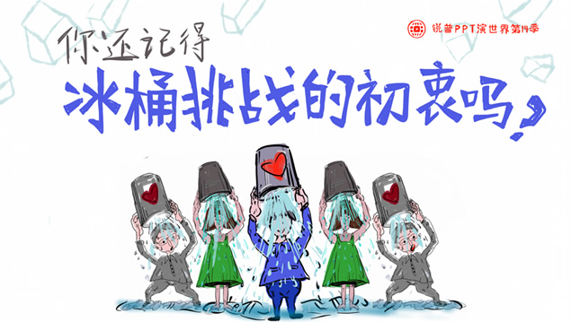

小游戏简介
冰桶挑战赛全称为“ALS冰桶挑战赛”，要求参与者在网络上发布自己被冰水浇遍全身的视频内容，然后该参与者便可以要求其他人来参与这一活动。
小游戏目标：
将冰水倒在挑战者的头上。
如何开始：
游戏载入后，点击开始游戏，然后点击接受挑战
操作指南：
当力度接近中线，拿冰桶的助手在挑战者上方时，按下按钮或空格键
桶挑战”是目前风靡全球的活动。而这个小游戏，则是让你体验一下冰凉的水从头上浇落的爽快感。也可以与朋友分享一下，比拼一下谁的冰凉指数更高吧！
